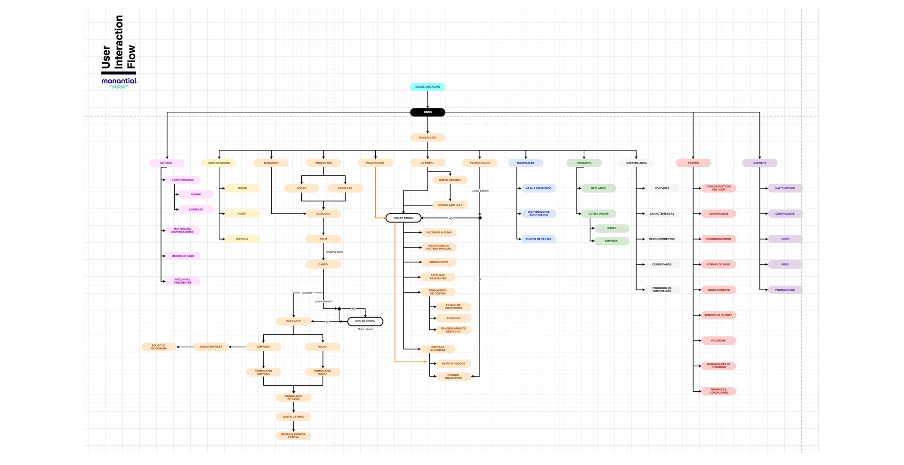
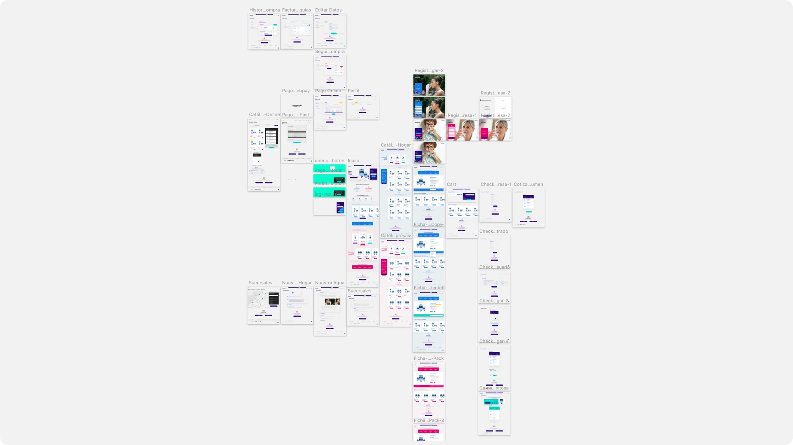
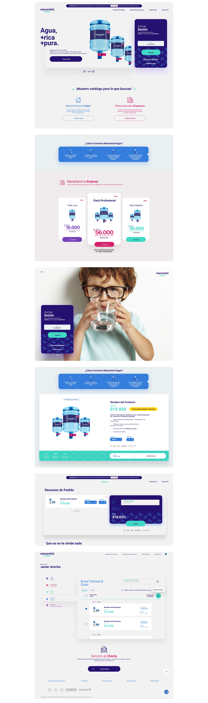

Manantial Service E-Commerce
Lead Designer | UX | UI | Data Driven Design
Manantial its a water company in Chile. It is selling its services through their website and call center. The aim was to make a B2B and B2C single Website. An amazing opportunity to use our brains and make a big research to reach our target.
- User Experience Design
- User Interface Design
- Website
- Data Driven Design
- Continuous Improvement UX
A new easy way to drink water wherever you want it

Every ending also has a beginning. Thanks to Data Driven Design Methodology and response for this product, I began reading and analysing their previous Google Analytics Tracked Data. Once I had recognized the recurrent users pains and higher metrics, I decided to blend all these journeys with a beautiful flow that takes a lot of iteration, allowing my nexts steps for the project.

Let‘s begin with a new „outfit“. An important part of this product was to create fidelity of their recurrent users in order to always maintain the service and of course, to track and engage more new users. Well, after some prototypes and testings, I was really glad because it started having a EFFECT!

A few views of screens. Profile, products and home were one of the big value products I designed for Manantial.